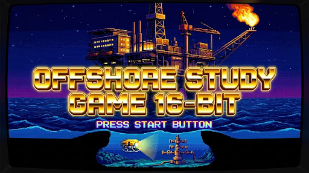

EDIÇÃO ESPECIAL PETROBRAS
V1.64
OU PRESSIONE [ENTER] / [ESPAÇO] NO TECLADO

OU PRESSIONE [ENTER] / [ESPAÇO] NO TECLADO
Bem-vinda de volta a bordo, Rafaela! Conexão de telemetria estabelecida com o FPSO P-77 e campo submarino de Búzios a -2.200m.